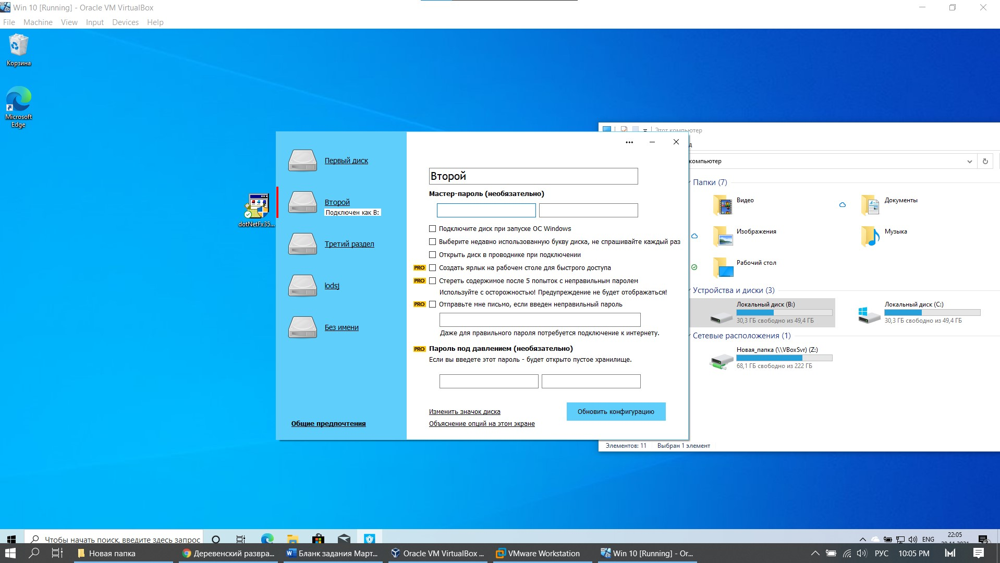
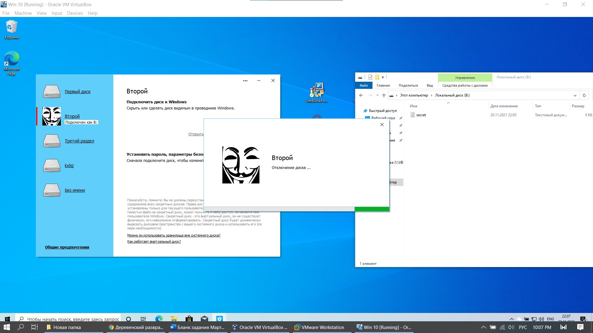
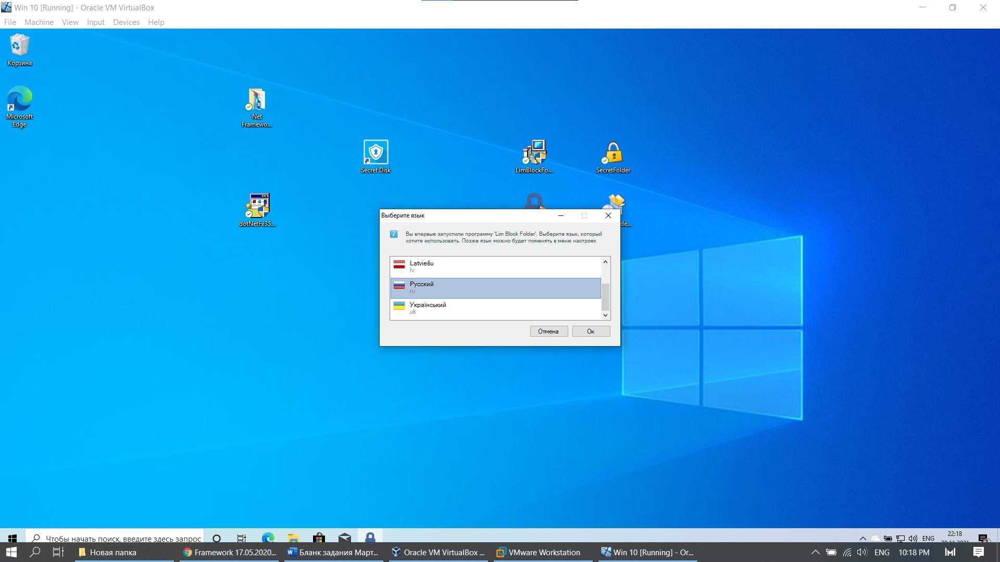
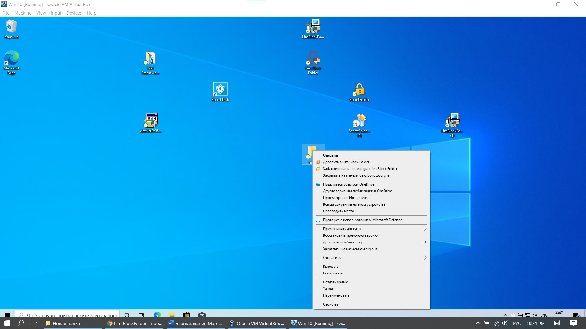
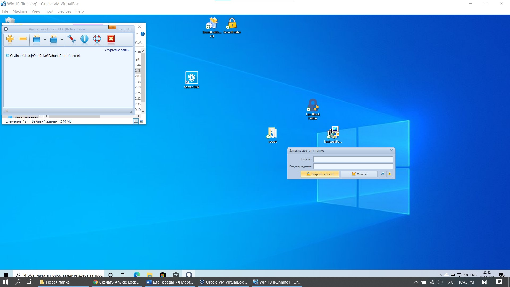
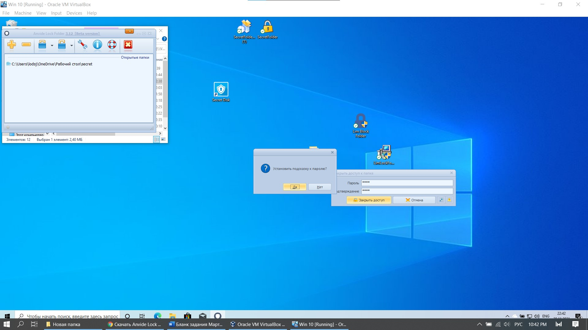

1 SecretDisk |
|
Secret Disk 4 – это программно-аппаратный продукт для защиты конфиденциальной информации (коммерческой тайны, персональных данных),
хранящейся и обрабатываемой на рабочих станциях под управлением OС Microsoft Windows 2000 / XP. К основным функциям Secret Disk 4.0
относится обеспечение: криптографической защиты от НСД информации на жёстком диске персонального компьютера, включая системный раздел;
двухфакторной аутентификации пользователей до загрузки операционной системы с помощью USB-ключей eToken; многопользовательской работы с
защищенными данными, хранящимися на персональном компьютере; возможности экстренного отключения зашифрованных дисков; сокрытия наличия
на персональном компьютере конфиденциальной информации. С помощью Secret Disk 4 можно реализовать различные сценарии защиты конфиденциальной
информации от несанкционированного доступа. Вы сможете сохранить критически важную информацию в том случае, если злоумышленник получит
физический доступ к жестким дискам (например, при проникновении в офис компании), или при инсайдерской атаке, где главным действующим лицом
является штатный сотрудник компании (включая специалиста IT-отдела или системного администратора). Кроме того, вы сможете уберечь свои данные
от излишней заинтересованности посторонних лиц, имеющих доступ к компьютерному оборудованию (сотрудники сервисного центра, обслуживающего оборудование). |
| Установка программы быстрая, состоит только из соглашения, выбора места инсталляции и предложения создания дополнительных ярлыков. |
 |
| Рис. 18 Установка приложения |
| При запуски приложения перед нами появляется окно регистрации полльзователя, состоит она из пароля, при помощи которого можно
получить доступ к самой программе и адреса электронной почты, чтобы в случае чего воссатновить забытый пароль. Изображение окна – рисунок 19. |
 |
| Рис. 19 Регистрация пользователя |
| После регистрации мы видим окно, в котором можем создать фиктивный диск, установить на него пароль,изображение,ярлыки и прочее. |
| Некоторые функции платные, поэтому протестировать их не удалось. |
 |
| Рис. 20 Выбор диска |
 |
| Рис. 21 Создание диска |
 |
| Рис. 22 Вид фиктивного диска в проводнике |
|  |
| Рис. 23 Конфигурация диска |
| После создания диска и работой с ним – мы можем отключить диск, таким образом он сокроет фиктивный диск и все файлы, находящиеся на нем. |
|  |
| Рис. 24 Отключение диска |
| При попытке опять активировать диск – нас просят авторизоваться или ввести пароль, который мы записали в конфигурации диска. |
 |
| Рис. 25 Пароль диска |
| Вывод: удобная программа, просто ориентироваться, можно вызывать подсказки и прочитав дополнительную информацию – разобраться
в интерфейсе. Хорошо еще то, что с программой проблем не было, как во время установки, так и во время запуска. Единственный
минус, который я могу выделить – чтобы открыть PRO функции, надо заплатить. В таком случае программу я считаю условно платной. |
2 SecretFolder |
|
My Secret Folder – универсальное решение для защиты вашего устройства от несанкционированного доступа.
Это инструмент, с помощью которого вы сможете защитить столько папок, сколько вы хотите различными способами:
блокирование их, скрывать их, или их шифрования. Кроме того само приложение является полностью безопасным,
потому что иметь возможность доступа к нему требуется пароль. Таким образом никто не будет в состоянии увидеть папки, которые вы скрываете. |
| Установка программы состояла из 2х шагов – соглашения и выбора папки для инсталляции. Она изображена на рисунке 1. |
| |
| Рис. 26 Установка SecretFolder |
| Также как и в предыдущей программе мы видим перед собой окно для регистрации пользователя: пароль от приложения и почты для восстановления.
Регистрация изображена на рисунке 2. |
 |
| Рис. 27 Регистрация нового пользователя |
| Далее на следующем этапе нам предстает минималистичный интерфейс, состоящий лишь из 4х кнопок. |
| 1 – Добавление папки – выбираем в проводнике папку, которую будем скрывать |
| 2 – Удаление папки, которую мы будем выбирать в программе, можно увидеть на рисунке 3 |
| 3 – Блокировка – сокрытие папки, которую нельзя даже обнаружить при помощи дополнительных инструментов или показа скрытых файлов – на рисунке 5 |
| 4 – Разблокировка – проявление скрытой папки на рисунке 4 |
| |
| Рис. 28 Интерфейс работы с папками |
| |
| Рис. 29 Обзор добавленной папки в программе и проводнике |
| |
| Рис. 30 Обзор заблокированной папки в программе и проводнике |
| Вывод: Удобный интерфейс ограниченный четыремя кнопками. Программа бесплатна и быстра в установке, но для защиты
мы используем папки, но проблема в том, что скрытые в им объекты никак не защищены, текстовые файлы можно читать прямо из редактора, выставив соответствующую кодировку. |
3 LimBlockFolder |
|
Lim Block Folder - предназначена для мгновенной защиты папок паролем. Она быстро и надежно скроет информацию на жестких дисках и съемных носителях.
Программа имеет две степени защиты данных, первый простой способ защиты данных (но даже при нем данные будут надежно спрятаны), но также есть
и второй способ, улучшенная защита, которая еще и зашифрует данные, но для скрытия вторым способом потребуется немного больше времени. |
| На каждую папку можно установить отдельный пароль, а данные скрытые на съемных носителях, на них и остаются, и данные можно открыть на
другом компьютере установив программу Lim Block Folder. Программа имеет удобный и интуитивно понятный интерфейс. Для большей безопасности
можно установить пароль и на программу и тогда никто кроме Вас ее не запустит. |
| Нашему взгляду предстает установщик программы. Установка состоит из 2х этапов – выбора языка и выбора места для установки. Рисунки 1-2. |
 |
| Рис. 31 Установка программы |
|  |
| Рис. 32 Выбор языка |
| После установки программы мы можем нажатием пкм по папке – защитить ее или добавить в список для конфигурации папок. При нажатии которых
у нас появляется ввод пароля для ее защиты, изображено ан рисунке 3. |
|  |
| Рис. 33 Контекствное меню |
|  |
| Рис. 34 Ввод пароля для защиты |
| Стоит отметить, что после ввода пароля – можно поставить подсказку, с помощью котрой можно в будущем восстановить его. |
|  |
| Рис. 35 Ввод подсказки |
| Вывод: Удобная программа по функционалу, напоминающая SecretFolder, но добавляющая функции в контекстные меню. Стоит отметить, что
программа на официальном сайте называется одним именем, но по итогу в контекстном меню – одно название, а в программном меню – другое. |
| Также было сложно ее установить, сложно было запустить ее. При запуске появлялись ошибки. |